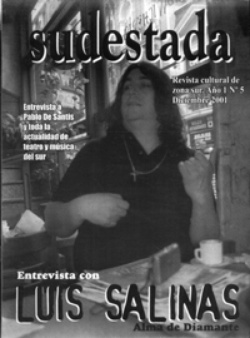

Buscar
La mirada de las mujeres en el arte
En un sistema marcado por el peso del patriarcado, el arte no esta exento de esta visión que privilegia la visión masculina y que limita a la mujer a determinadas tareas, encasillando su mirada.
Edición N° 5
Diciembre 2001
Revista bimensual
Comprar edición impresaSumario
- Luis Salinas: "No pertenezco a ninguna cofradía"
- Sudestada sigue soplando
- La mirada de las mujeres en el arte
- Pablo De Santis: "Me atrae el ambiente intelectual como escenario del crimen"
- Lester Young: Jazz a 45° de inclinación. Lo importante no es la posición.
- Roberto Mariani, el poeta anónimo de La Boca
- Hoy un juramento, mañana una traición
- El hombre de la espada
- La perla negra de Aramis Rigatuso
Compartir Articulo
Producto del feminismo surgido a fines de los años '60, comenzaron a surgir en los Estados Unidos artistas que renunciaban a las "labores femeninas" (coser, bordar, tejer) para desarrollarse en técnicas como tallar, soldar o pintar. Ellas denunciaban que las prácticas tradicionalmente femeninas habían sido excluidas de la historia del "gran arte" al no estar dentro de los parámetros valorativos de un modelo cultural elaborado exclusivamente por hombres.
A fines del siglo XX una de las características del arte fue la incorporación de la mujer como sujeto activo en el ámbito de la creación, ya no solo como objeto de representación. Proclamaban la diferencia, individualidad y subjetividad de los cuerpos y surgió dentro en este contexto el arte de aquellas personas que estaban representadas minoritariamente en la sociedad, que mostrarían de manera combativa su mundo: mujeres, gay, negros y otras minorías étnicas.
No iban a conformar un movimiento artístico homogéneo, ni un antes y un después en la historia de las artes plásticas. Ellas trabajarían en el anonimato durante años, o bajo la sombra del modelo hombre-blanco-heterosexual, tal es el caso de Louise Bourgeoi (1911) a la que se considera una de las grandes figuras del siglo después de haber cumplido los setenta años; o la pintora Lee Krasner (1908), absorbida por el éxito de su compañero, "el viril
artista norteamericano" Jackson Pollock.
Las precursoras no tienen lugar dentro del futurismo (1909) cuyo manifiesto rezaba: "Queremos glorificar la guerra -el único acto de limpieza del mundo, el militarismo, el patrio tismo, las ideas hermosas que matan y el desprecio a la mujer. Queremos destruir los museos, las librerías, el feminismo y todos aquellos actos oportunistas y utilitarios de las cobardía".
Tampoco dentro del surrealismo (1924) ya que quienes lo integraban consideraban a la mujer una máquina animada. Mucho menos dentro del minimalismo (1960), cuyas producciones por su rigidez y factura industrial se asociaban al machismo, el poder y la estética de las corporaciones.
Para construir su identidad las artistas iban a narrarse a sí mismas, de la diversidad en la elección de los materiales va a surgir la diferencia con las formas tradicionales de la representación femenina, elaboradas por el hombre, que lo representan en base a sus necesidades; dejando totalmente al margen la propia experiencia de la mujer, que cuando se inventa a sí misma crea imágenes que incorporan sus vivencias, su entorno y sus particularidades.
Las artistas iban a relatar la condición de la mujer, pero el eje del planteo no fue la lucha contra el sexo opuesto, porque tanto la víctima como el victimario pueden ocupar lugares intercambiables. Trabajaban la "condición
femenina" como símbolo de la "condición humana" en tanto la zona de lo femenino era el lugar visible de la opresión, de la marginalidad, de la explotación y de la ausencia.
Las artes plásticas, concebidas en una sociedad machista, han privilegiado la visión por sobre los demás sentidos colocando al cuerpo en el lugar de mera imagen, es decir, perdiendo su materialidad. Las mujeres iban a ocuparse de incluir la experiencia de los otros sentidos en sus obras, construyendo con materiales que aportan olores y texturas táctiles. Los temas representados afectaban por igual a hombres y a mujeres, pero es indudable que al igual que hoy, existía una clase de vivencias propias de la mujer que hacían a la "mirada femenina": el mundo de lo privado, de lo íntimo, de los miedos y las sensaciones difícilmente comunicables.
Las artistas trabajaban marcando una diferenciación sobre el género, resignificando el cuerpo, dándole historia, cargándolo de contenido y haciendo una vuelta a lo orgánico; es decir que el tratamiento era simbólico. Sus producciones iban a rondar sobre la búsqueda de la identidad y para su construcción le darían prioridad a sus experiencias. Trabajaban el cuerpo como soporte físico y psíquico de identidad, en donde se integra (y manifiesta) lo interior y lo exterior, reivindicando el derecho a auto inventarse, a crear imágenes que hablaran de ellas.
Nacieron así imágenes corporales que tienen que ver con sus experiencias concretas e intentaban suprimir esa separación a la que el hombre somete su cuerpo (a la que sometemos nuestros cuerpos, la disociación o ruptura entre cuerpo y alma).
Imágenes que narran la experiencia de lo femenino a través de sus condiciones físicas (menstruación, embarazo, etc), o que representan a la mujer desde su propio deseo, liberada de la necesidad de seducir al varón para ser reconocida. Imágenes que hablan del cuerpo como expresión de fuerzas interiores, el cuerpo como metáfora y escenario de conflictos y pasiones.
(La nota completa en la edición gráfica de Sudestada N°05)
Comentarios
Soledad Fracchia
Articulos más vistos


LIBRERÍA SUDESTADA

Colección infantil

Distribuidora de Libros

Suscripción

Sudestada en URUGUAY

Otros articulos de esta edición
 Antihéroes
Antihéroes
Roberto Mariani, el poeta anónimo de La Boca
Escribir sobre Roberto Mariani es comprobar que el éxito y la notoriedad de los Hombres de Letras, depende en muchos ...
 Voces de hoy
Voces de hoy
Pablo De Santis: "Me atrae el ambiente intelectual como escenario del crimen"
Descendiente de la literatura policial y fantástica, Pablo De Santis representa la imagen de la historia, el enigma y la ...
 Humor
Humor
La perla negra de Aramis Rigatuso
 Nota de tapa
Nota de tapa
Luis Salinas: "No pertenezco a ninguna cofradía"
Capaz de caminar por Lavalle sin ser reconocido, Luis Salinas, es un ejemplo de humildad y talento. Distinguido más en ...
 El galpón del viejo Charly
El galpón del viejo Charly
Lester Young: Jazz a 45° de inclinación. Lo importante no es la posición.
(Buen año para todos. A modo de despedida, es el deseo de todos los que de alguna forma trabajamos en ...
El hombre de la espada
Protagonista del golpe de estado de 1930, defensor de los intereses de la oligarquía y las empresas extranjeras, nunca ocultó ...